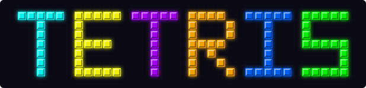

Track materialization converts raw video into reusable object tracks that downstream queries can run against without rerunning tracking, but extracting those tracks efficiently and with high fidelity remains expensive. Prior systems reduce cost through temporal frame sampling, erasing the inter-frame motion that fine-grained tracking requires. In stationary video, however, large portions of each frame contain no objects of interest, and the remaining regions tolerate different sampling rates. We present Tetris, a track-extraction system that decomposes videos into a tile-based polyomino data model, enabling fine-grained spatiotemporal pruning that reduces detector calls with minimal fidelity loss. Tetris runs three operators upstream of the user-provided detector: a classifier identifies relevant tiles and groups them into polyominoes, an integer linear program (ILP) prunes redundant polyominoes under a user-specified accuracy constraint, and a packer assembles the survivors into canvases that minimize detector calls. Across seven stationary-video datasets, Tetris stays within a 5% tracking accuracy loss of a full-frame, every-frame reference pipeline, whereas prior systems exceed this bound on 3 of the 7. On datasets where prior systems also satisfy the 5% loss bound, Tetris achieves up to 16.5x higher throughput than prior systems and 68.8x than the reference pipeline.
@article{Kittivorawong_2026,
title={Tetris: Tile-level Sampling for Efficient and High-Fidelity Video Object Tracking},
author={Kittivorawong, Chanwut and Chao, Alena and Si, Charlie and Cheung, Alvin},
year={2026},
primaryClass={cs.DB},
month=May,
}